Turning 21 in the Bahamas
Undated
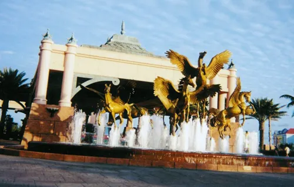
An undated Facebook album titled Turning 21 in the Bahamas.
Frames cover a resort pool and dining room, colorful streets, a beach walk, a dolphin fountain, and parasailing off the shore.


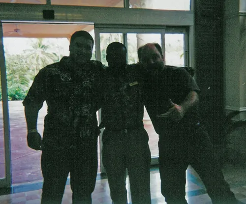

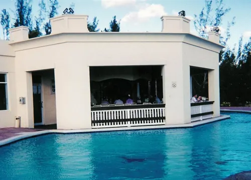

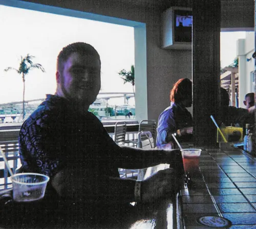

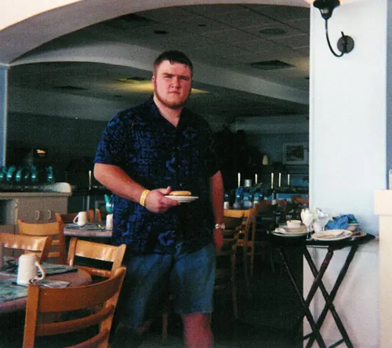

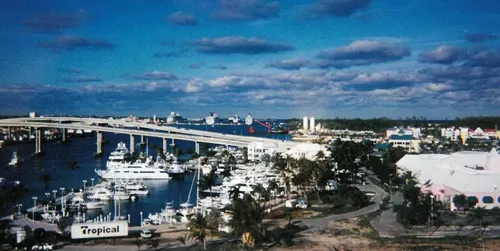

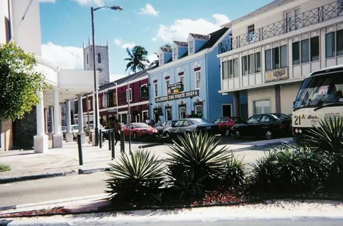

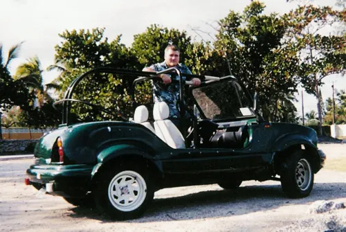

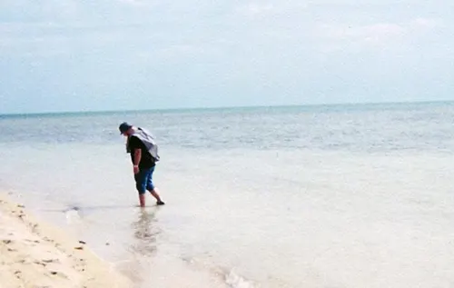

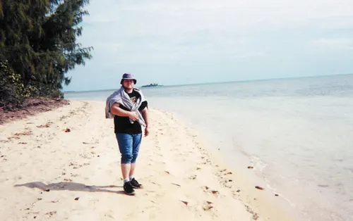

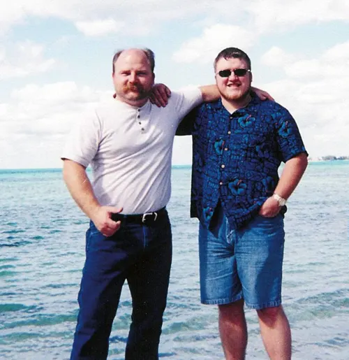

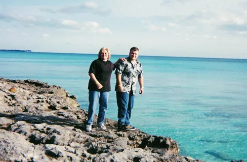

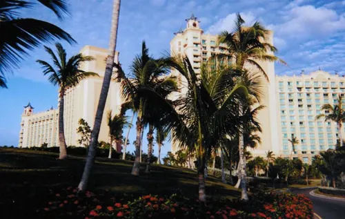

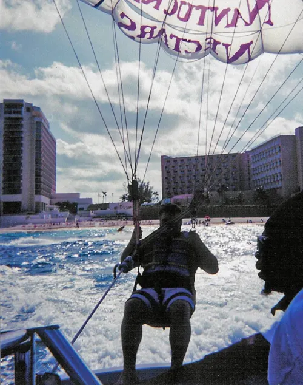